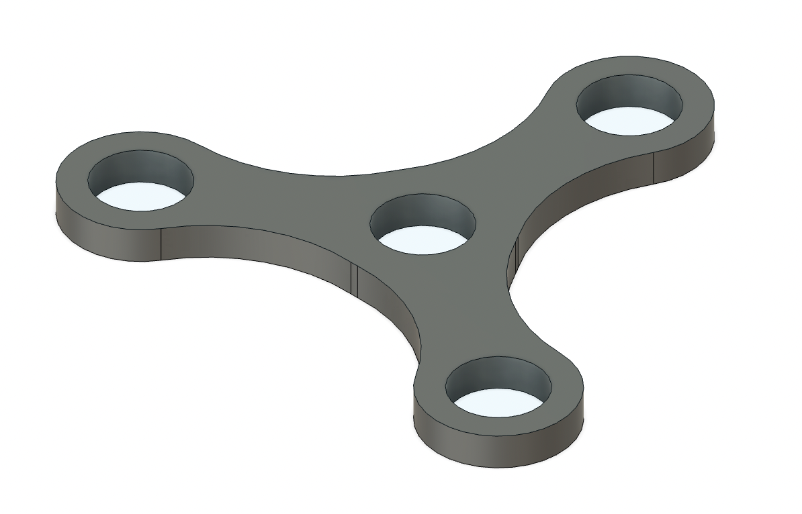
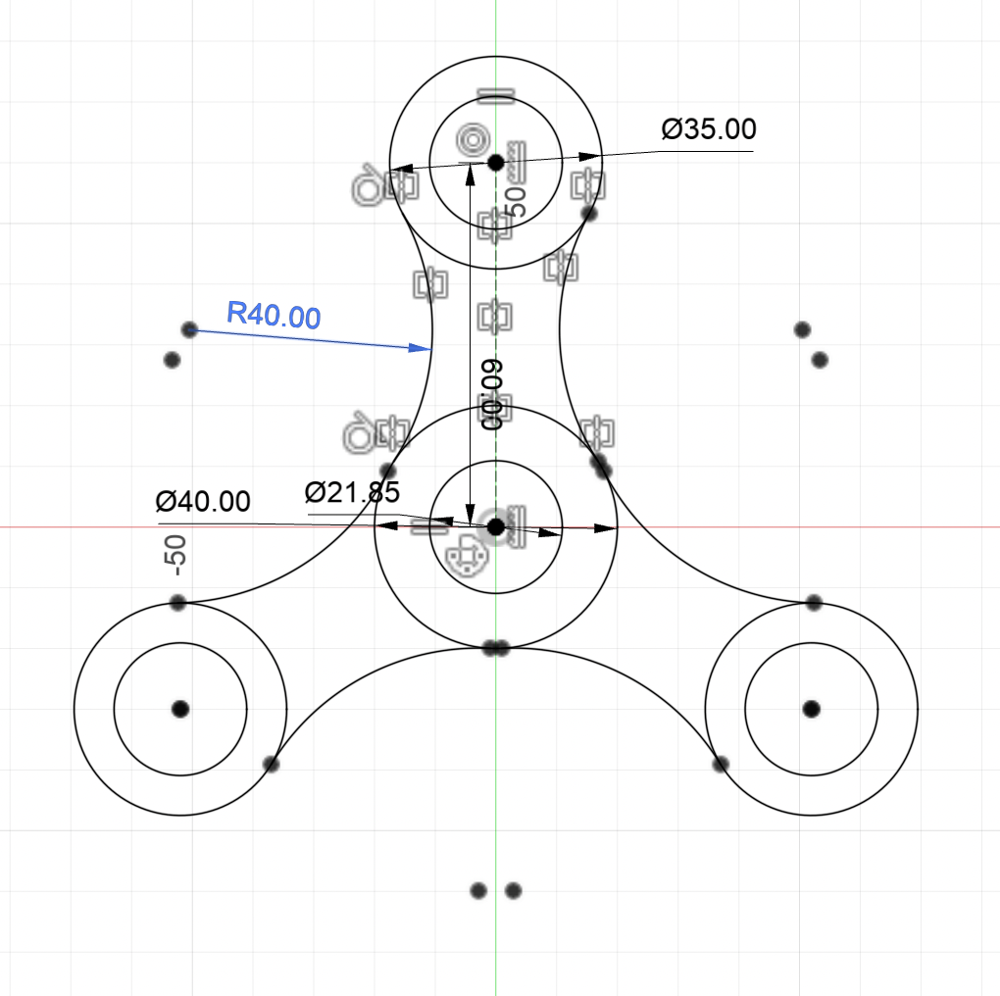

This weeks assignment was fairly simple. It was to desgign something and then CNC it, ideally using the ShopBot or anything else in the actual components. For my I decided to make a fidget spinner. So I went to Fusion360 and came up with a design for the actual fidget spinner. I tried to ensure there was enough sizing for a bearing side of around 1.125in.
Once I had a CAD model I went to the ShopBot and made sure to select that the holes on the outside edges would only go halfway to sort of add complexity to the project.


The project turned out fairly well. However once I put in the bearing I soon realized that from the CAD model the fidget spinner doesn't actually spin around my hand. Oops! Besides that I moved on and decided to do some vacuum forming with my actual fidget spinner. I unfortunately forgot to take a picture, but I used the vacuum former with a small blue sheet and then formet a small outline.